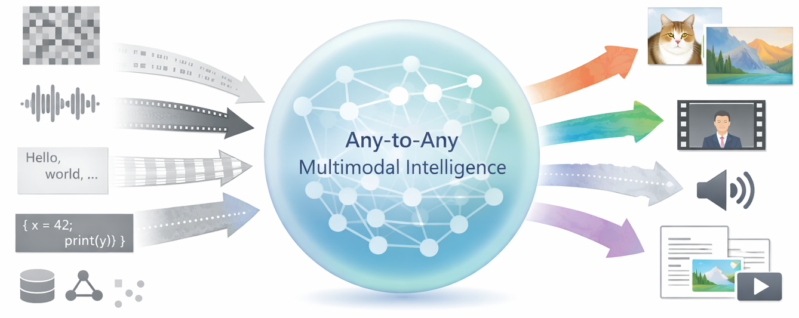
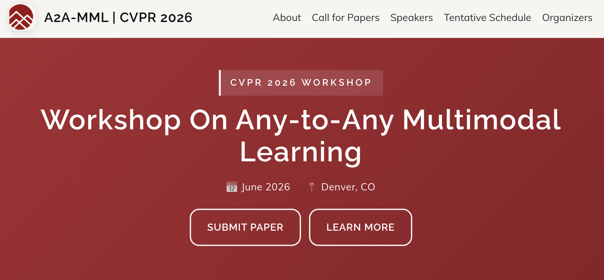

01
Flagship models
Core model papers push toward unified any-input any-output architectures and training paradigms.
Any-to-Any Multimodal Intelligence aims to build a unified intelligent system capable of understanding, reasoning, and generating across arbitrary combinations of modalities. Unlike traditional multimodal models, which are typically limited to fixed input-output modes such as text-to-image or image-to-text, the any-to-any framework emphasizes flexible modeling capabilities in scenarios involving multiple inputs, multiple outputs, and interleaved modalities.
The core challenge lies in designing a unified architecture that supports multimodal collaborative modeling, in learning how to align semantics and control information flow in complex interleaved structures, and in evaluating generalization and scalability in real-world open environments. This direction therefore involves not only innovation in model architecture, but also the systematic construction of data organization methods, task design paradigms, and evaluation frameworks. This page serves as a central hub for our representative models, benchmarks, workshops, and surveys.

Core model papers push toward unified any-input any-output architectures and training paradigms.
Evaluation work turns the vision into measurable tasks that stress flexible modality composition.
Workshops create a public venue for the field, clarifying open problems and bringing together adjacent communities.
Survey work will consolidate technical progress, taxonomy, and unresolved challenges across this direction.

NExT-GPT advances a unified framework for multimodal understanding and generation across text, image, video, and audio. It supports interleaved multimodal prompting, cross-modal reasoning, and controllable output generation inside one coherent model design.

UniM is designed as a unified benchmark for any-to-any interleaved multimodal intelligence, with 31K high-quality instances spanning 30 domains and 7 representative modalities: text, image, audio, video, document, code, and 3D. It targets intertwined reasoning and generation demands that go beyond conventional multimodal evaluation.

The Any-to-Any Multimodal Intelligence workshop centers on the next stage of multimodal intelligence: systems that can understand, align, transform, and generate across arbitrary modality sets. It provides a focal point for discussing architecture, training, data, evaluation, and real-world deployment challenges.
A forthcoming synthesis of methods, benchmarks, workshop themes, and unresolved questions across the A2A-MI landscape.
This module is reserved for the survey paper that will unify the thread from a higher level: what counts as any-to-any multimodal intelligence, how existing approaches differ, which evaluation settings are still missing, and where the most important opportunities lie.
A living repository that organizes the broader any-to-any landscape, including datasets, paper collections, workshops, surveys, tools, and ongoing community updates.
This repository systematizes Any-to-Any Generation and adjacent A2A-MI research through a continuously maintained collection of resources: news, datasets, paper lists, and tools.